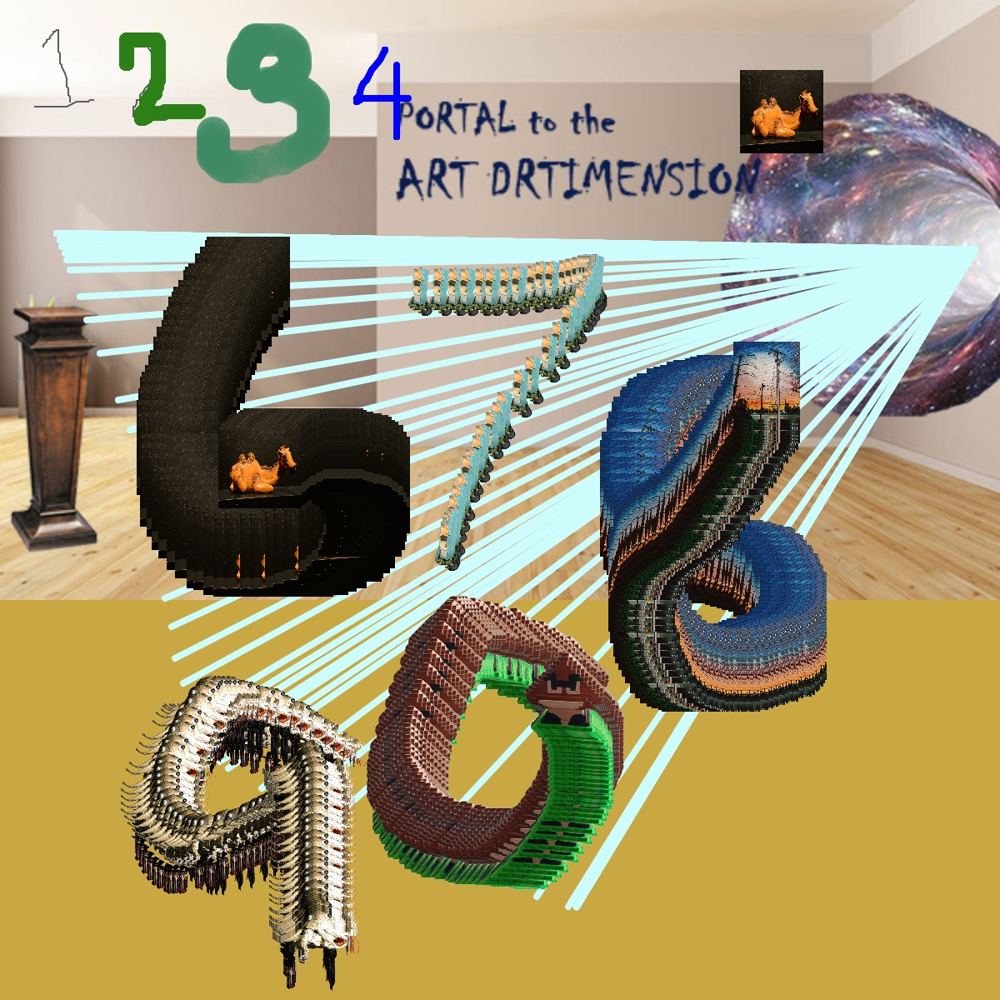

3D Print
Glitch
Meme Mashup
Minecraft
3D Printed Sculpture
"Net art"
"Touch Me Game"
"DIY Photoshop"
"P5.js Self Portrait"

Click here to try
This is do it yourself Photo Shop that I made using P5.js called DIYPhotoshop.
var img,img2back, img3, img4, img5, img9; var initials ='mc'; // your initials var choice = '1'; // starting choice, so it is not empty var screenbg = 'rgb(201, 168, 68)'; // off white background //describe('white rect with black outline in mid-right of canvas'); var lastscreenshot=61; // last screenshot never taken function preload() { // preload() runs once, it may make you wait // img = loadImage('cat.jpg'); // cat.jpg needs to be next to this .js file // you can link to an image on your github account img = loadImage('https://MikahlaCary.github.io/netart/camell.jpg'); img2back = loadImage('https://MikahlaCary.github.io/background.jpg') img3 = loadImage('https://MikahlaCary.github.io/goombahcutout.png') img4 = loadImage('https://MikahlaCary.github.io/westsidesunset.jpg') img5 = loadImage('https://MikahlaCary.github.io/ceramicfridgecutout.png') img9 = loadImage('https://MikahlaCary.github.io/octodreams-removebg-preview.png') } function setup() { createCanvas(600, 600); // canvas size background(screenbg); // use our background screen color image(img2back,0,0); } function draw() { if (keyIsPressed) { choice = key; // set choice to the key that was pressed clear_print(); // check to see if it is clear screen or save image } if (mouseIsPressed){ newkeyChoice(choice); // if the mouse is pressed call newkeyChoice } } function newkeyChoice(toolChoice) { //toolchoice is the key that was pressed // the key mapping if statements that you can change to do anything you want. // just make sure each key option has the a stroke or fill and then what type of // graphic function if (toolChoice == '1' ) { // first tool /////first tool just plain black line stroke(092); line(mouseX, mouseY, pmouseX, pmouseY); } else if (toolChoice == '2') { // second tool /////second tool green fat line stroke(43, 128, 24); strokeWeight(9); line(mouseX, mouseY, pmouseX, pmouseY); strokeWeight (4); } else if (toolChoice == '3') { // third tool /////third tool stroke(61, 138, 99, 100); strokeWeight(20); line(mouseX, mouseY, pmouseX, pmouseY); strokeWeight (4); //number 4 tool draws } else if (toolChoice == '4') { stroke(0, 0, 255); line(mouseX, mouseY, pmouseX, pmouseY); //number 5 tool draws ray of light } else if (key == '5') { // this tool calls a function stroke(204, 252, 252); line(585,150, mouseX, mouseY); // make testbox do something! // line(mouseX, mouseY, pmouseX, pmouseY);5 } else if (toolChoice == '6') { image(img, mouseX, mouseY, 50, 50); // add ceramic fridge cut out to the mix1 } else if (toolChoice == '7') { //fill(100, 200, 100); image(img5,mouseX, mouseY, 20, 30); //Make a poster image } else if (toolChoice == '8') { // fill(300, 100, 0, 80); image(img4,mouseX, mouseY, 40, 50); } else if (toolChoice == '9') { //fill(100, 100, 0, 80); image(img9,mouseX, mouseY, 60, 60); } else if (toolChoice == '0' ) { // 0 places the image we pre-loaded image(img3, mouseX, mouseY, 50, 50); } else if (toolChoice == 'g' || toolChoice == 'G') { // g places the image we pre-loaded image(img, mouseX, mouseY, 50, 50); } } function testbox(r, g, b) { // this is a test function that will show you how you can put your own functions into the sketch x = mouseX; y = mouseY; fill(r, g, b); rect(x-50, y-50, 100, 100); } function clear_print() { // this will do one of two things, x clears the screen by resetting the background // p calls the routine saveme, which saves a copy of the screen if (key == 'x' || key == 'X') { background(screenbg); // set the screen back to the background color image(img2back,0,0); } else if (key == 'p' || key == 'P') { saveme(); // call saveme which saves an image of the screen } } function saveme(){ //this will save the name as the intials, date, time and a millis counting number. // it will always be larger in value then the last one. filename=initials+day() + hour() + minute() +second(); if (second()!=lastscreenshot) { // don't take a screenshot if you just took one saveCanvas(filename, 'jpg'); key=""; } lastscreenshot=second(); // set this to the current second so no more than one per second }